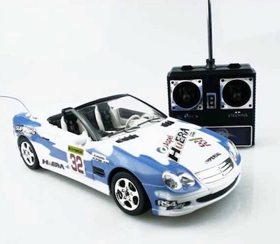
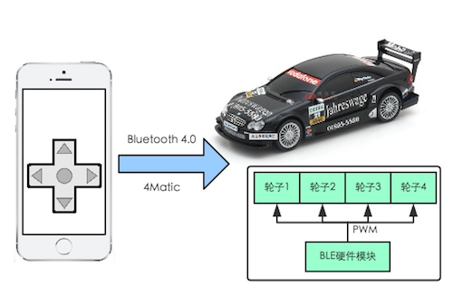

商店里摆放的遥控玩具车看着都觉得很好玩，可是买回去之后玩了几次就玩腻了，也许一个人玩太寂寞了吧。不禁令人想到，当年微信的“打飞机”游戏风靡了朋友圈，大家竞相比赛，看谁能在朋友圈上屹立不倒。其实打飞机游戏本身没什么好玩，甚至早在红白机时代就已经被无数小朋友玩腻了，微信简简单单弄了一个比分排行榜就红火了一把。要是从人性的角度来解释，也许一个玩具也要能够连上网呀。
JUMA推出一种蓝牙遥控玩具车技术方案，它使用手机作为遥控终端，低功耗蓝牙作为无线信号传输方式。相比于传统的遥控终端，我们在手机APP上开发出丰富的游戏体验，如双人赛道火拼、欢乐对对碰、跑跑卡丁车等，将线上游戏和线下玩具有效的结合起来。
如果您正在考虑开发此类虚拟/现实结合的游戏，本蓝牙玩具车方案是一个帮助您快速实现。
软件
硬件
软件
硬件
请发邮件至hello@jumacc.com，客服人员会和您联系。